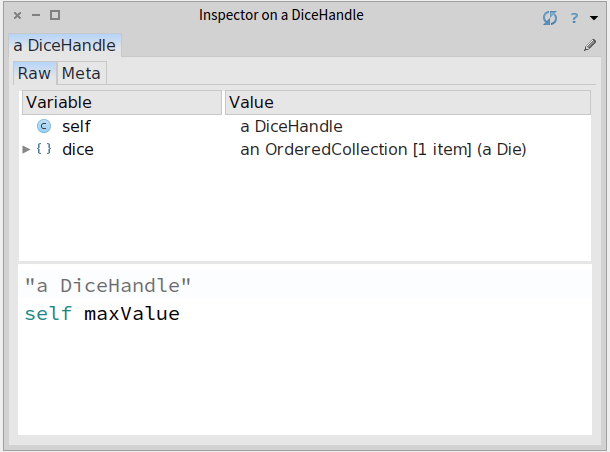
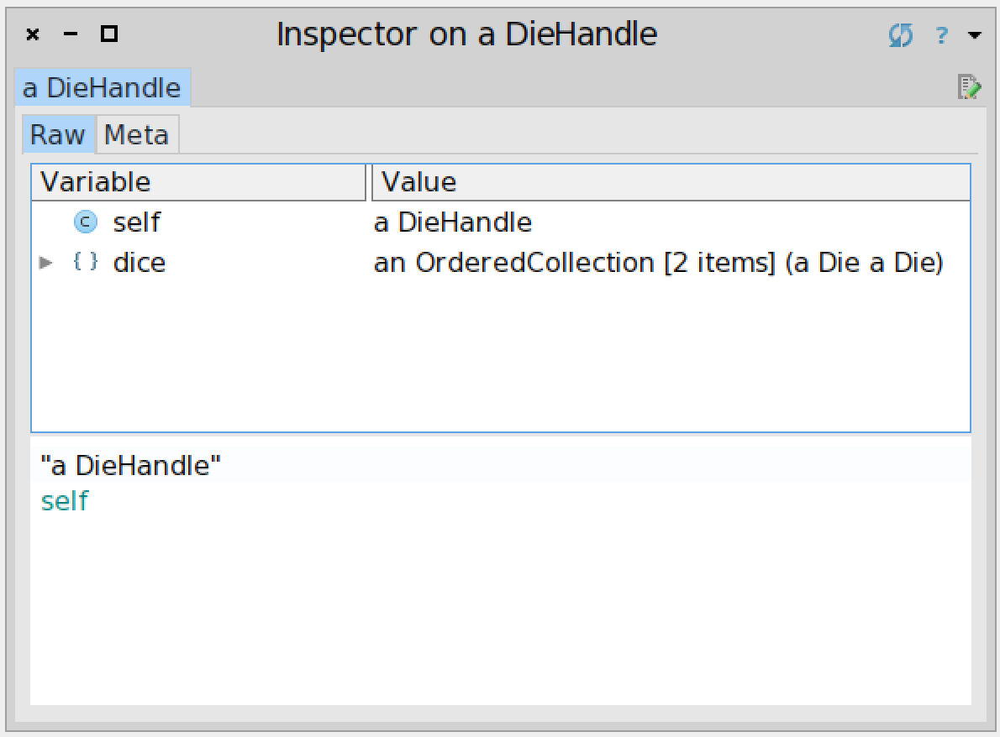
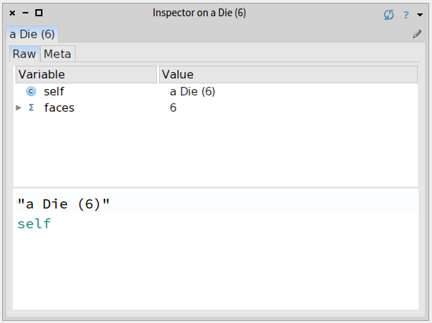
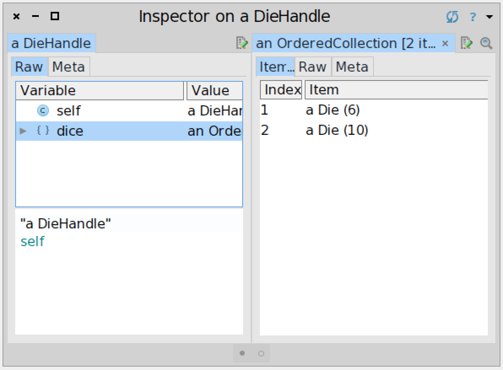

11 Crafting a simple embedded DSL with Pharo
In this chapter, you will develop a simple domain-specific language (DSL) for rolling dice. Players of games such as Dungeons & Dragons are familiar with such DSL. An example of such DSL is the following expression: 2 D20 + 1 D6 which means that we should roll two 20-face dices and one 6-face die.
It is called an embedded DSL because the DSL uses the syntax of the language used to implement it. Here we use the Pharo syntax to implement the Dungeons & Dragons rolling die language.
This little exercise shows how we can (1) simply reuse traditional operators such as +, (2) develop an embedded domain-specific language, and (3) use class extensions (the fact that we can define a method in another package than the one of the class of the method).
11.1 Getting started
Using the code browser, define a package named Dice or any name you like.
Create a test
It is always empowering to verify that the code we write is always working as we defining it. For this purpose you should create a unit test. Remember unit testing was promoted by K. Beck first in the ancestor of Pharo. Nowadays this is a common practice but this is always useful to remember our roots!
Define the class DieTest as a subclass of TestCase as follows:
TestCase << #DieTest
package: 'Dice'What we can test is that the default number of faces of a die is 6.
DieTest >> testInitializeIsOk
self assert: Die new faces equals: 6If you execute the test, the system will prompt you to create a class Die. Do it.
Define the class Die
The class Die inherits from Object and it has an instance variable, faces to represent the number of faces one instance will have. Figure 11.1 gives an overview of the messages.
withFaces: is a class method.
Object subclass:
... Your solution ...In the initialization protocol, define the method initialize so that it simply sets the default number of faces to 6.
Die >> initialize
... Your solution ...Do not hesitate to add a class comment.
Now define a method to return the number of faces an instance of Die has.
Die >> faces
^ facesNow your tests should all pass (and turn green).
11.2 Rolling a die
To roll a die you should use the method from Number atRandom which draws randomly a
number between one and the receiver. For example 10 atRandom draws number between 1 to 10.
Therefore we define the method roll:
Die >> roll
... Your solution ...Now we can create an instance Die new and send it the message roll and get a result.
Do Die new inspect to get an inspector and then type in the bottom pane self roll.
You should get an inspector like the one shown in Figure 11.2. With it you can interact with a die by writing expression in the bottom pane.

11.3 Creating another test
But better, let us define a test that verifies that rolling a new created dice with a default 6 faces only returns value comprised between 1 and 6. This is what the following test method is actually specifying.
DieTest >> testRolling
| d |
d := Die new.
10 timesRepeat: [ self assert: (d roll between: 1 and: 6) ]Often it is better to define the test even before the code it tests. Why? Because you can think about the API of your objects and a scenario that illustrate their correct behavior. It helps you to program your solution.
11.4 Instance creation interface
We would like to get a simpler way to create Die instances. For example we want to create a 20-face die as follows: Die withFaces: 20 instead of always have to send the new message to the class as in Die new faces: 20.
Both expressions are creating the same die but one is shorter.
Let us look at it:
- In the expression
Die withFaces:, the messagewithFaces:is sent to the classDie. It is not new, we constantly sent the messagenewtoDieto created instances. - Therefore we should define a method that will be executed
Let us define a test for it.
DieTest >> testCreationIsOk
self assert: (Die withFaces: 20) faces equals: 20What the test clearly shows is that we are sending a message to the class Die itself.
Defining a class method
Define the class method withFaces: as follows:
- Click on the class button in the browser to make sure that you are editing a class method.
- Define the method as follows:
Die class >> withFaces: aNumber
"Create and initialize a new die with aNumber faces."
| instance |
instance := self new.
instance faces: aNumber.
^ instanceLet us explain this method
- The method
withFaces:creates an instance using the messagenew. Sinceselfrepresents the receiver of the message and the receiver of the message is the classDieitself thenselfrepresents the classDie. - Then the method sends the message
faces:to the instance and - Finally returns the newly created instance.
Pay really attention that a class method withFaces: is sent to a class, and an instance method sent to the newly created instance faces:. Note that the class method could have also named faces: or any name we want, it does not matter, it is executed when the receiver is the class Die.
This test will not work since we did not create yet the method faces:. This is now the time to define it. Pay attention the method faces: is sent to an instance of the class Die and not the class itself. It is an instance method, therefore make sure that you deselected the class button before editing it.
Die >> faces: aNumber
faces := aNumberNow your tests should run. So even if the class Die could implement more behavior, we are ready to implement a die handle.
A class method is a method executed in reaction to messages sent to a class. It is defined on the class side of the class. InDie withFaces: 20, the messagewithFaces:is sent to the classDie. InDie new faces: 20, the messagenewis sent to the classDieand the messagefaces:is sent to the instance returned byDie new.
[Optional] Alternate instance creation definition
In a first reading, you can skip this section. The class method definition withFaces: above is strictly equivalent to the one below.
Die class >> withFaces: aNumber
^ self new faces: aNumber; yourselfLet us explain it a bit. self represents the class Die itself. Sending it the message new, we create an instance and send it the faces: message. And we return the expression. So why do we need the message yourself. The message yourself is needed to make sure that whatever value the instance message faces: returns, the instance creation method we are defining returns the new created instance. You can try to redefine the instance method faces: as follows:
Die >> faces: aNumber
faces := aNumber.
^ 33Without the use of yourself, Die withFaces: 20 will return 33. With yourself it will return the instance.
The trick is that yourself is a simple method defined on Object class: The message yourself returns the receiver of a message.
The use of ; sends the message to the receiver of the previous message (here faces:). The message yourself is then sent to the object resulting from the execution of the expression self new (which returns a new instance of the class Die), as a consequence it returns the new instance.
11.5 First specification of a die handle
Let us define a new class DieHandle that represents a die handle.
The following code snippet shows the API that we would like to offer for now (as shown in Figure 11.3). We create a new handle then add some dice to it. We will use this kind of expressions in future tests below.
DieHandle new
addDie: (Die withFaces: 6);
addDie: (Die withFaces: 10);
yourselfOf course we will define tests first for this new class. We define the class DieHandleTest.
TestCase << #DieHandleTest
package: 'Dice'Testing a die handle
We define a new test method as follows. We create a new handle and add one die of 6 faces and one die of 10 faces. We verify that the handle is composed of two dice.
DieHandleTest >> testCreationAdding
| handle |
handle := DieHandle new
addDie: (Die withFaces: 6);
addDie: (Die withFaces: 10);
yourself.
self assert: handle diceNumber = 2.In fact we can do it better. Let us add a new test method to verify that we can even add two dice having the same number of faces.
DieHandleTest >> testAddingTwiceTheSameDice
| handle |
handle := DieHandle new.
handle addDie: (Die withFaces: 6).
self assert: handle diceNumber = 1.
handle addDie: (Die withFaces: 6).
self assert: handle diceNumber = 2.Now that we specified what we want, we should implement the expected class and messages. Easy!
11.6 Defining the DieHandle class
The class DieHandle inherits from Object and it defines one instance variable to hold the dice it contains.
Object subclass: ...
... Your solution ...We simply initialize it so that its instance variable dice contains an instance of OrderedCollection.
DieHandle >> initialize
... Your solution ...Then define a simple method addDie: to add a die to the list of dice of the handle. You can use the message add: sent to a collection.
DieHandle >> addDie: aDie
... Your solution ...Now you can execute the code snippet and inspect it. You should get an inspector as shown in Figure 11.4
DieHandle new
addDie: (Die withFaces: 6);
addDie: (Die withFaces: 10);
yourself
Finally, we should add the method diceNumber to the DieHandle class to be able to get the number of dice of the handle. We just return the size of the dice collection.
DieHandle >> diceNumber
^ dice sizeNow your tests should run and this is a good moment to save and publish your code.
11.7 Improving programmer experience
Now when you open an inspector you cannot see well the dice that compose the die handle. Click on the dice instance variable and you will only get a list of a Dice without further information. What we would like to get is something like a Die (6) or a Die (10) so that in a glance we know the faces a die has.
DieHandle new
addDie: (Die withFaces: 6);
addDie: (Die withFaces: 10);
yourselfThis is the message printOn: that is responsible to provide a textual representation of the message receiver. By default, it just prints the name of the class prefixed with 'a' or 'an'. So we will enhance the printOn: method of the Die class to provide more information. Here we simply add the number of faces surrounded by parenthesis. The printOn: message is sent with a stream as argument. This is in such stream that we should add information. We use the message nextPutAll: to add a number of characters to the stream. We concatenate the characters to compose () using the message , comma defined on collections (and that concatenate collections and strings).
Die >> printOn: aStream
super printOn: aStream.
aStream nextPutAll: ' (', faces printString, ')'Now in your inspector you can see effectively the number of faces a die handle has as shown by Figure 11.5 and it is now easier to check the dice contained inside a handle (See Figure 11.6).


Note This implementation of printOn: is suboptimal. Indeed during the message faces printString, it creates a separate stream instead of using the one pass as argument.
To understand the problem you can have a look at the implementation of the method printString defined in the class Object.
Die >> printOn: aStream
super printOn: aStream.
aStream
nextPutAll: '(';
print: faces;
nextPutAll: ')'11.8 Rolling a die handle
Now we can define the rolling of a die handle by simply summing result of rolling each of its dice.
Implement the roll method of the DieHandle class. This method must collect the results of rolling each dice of the handle and sum them.
You may want to have a look at the method sum: in the class Collection or use a simple loop such as do: to iterate over the dice.
DieHandle >> roll
... Your solution ...Now we can send the message roll to a die handle.
handle := DieHandle new
addDie: (Die withFaces: 6);
addDie: (Die withFaces: 10);
yourself.
handle rollDefine a test to cover such behavior. Rolling an handle of n dice should be between n and the sum of the face number of each die.
DieHandleTest >> testRoll
... Your solution ...11.9 About Dice and DieHandle API
It is worth to spend some times looking at the relationship between DieHandle and Dice.
A die handle is composed of dices. What is an important design decision is that the API of the main behavior (roll) is the same for a die or a die handle. You can send the message roll to a dice or a die handle. This is an important property.
Why? Because it means that from a client perspective, she/he can treat the receiver without having to take care about the kind of object it is manipulating. A client just sends the message roll to an object and get back a number (as shown in Figure 11.7). The client is not concerned by the fact that the receiver is composed out a simple object or a complex one. Such design decision supports the Don't ask, tell principle.
Offering polymorphic API is a tenet of good object-oriented design. It enforces the Don't ask, tell principle. Clients do not have to worry about the type of the objects to whom they talk to.
For example we can write the following expression that adds a die and a dieHandle to a collection and collect the different values (we convert the result into an array so that we can print it in the book).
| col |
col := OrderedCollection new.
col add: (Die withFaces: 20).
col add: (DieHandle new addDie: (Die withFaces: 4); yourself).
(col collect: [:each | each roll]) asArray
>>> #(17 3) About composition
Composite objects such document objects (a book is composed of chapters, a chapter is composed of sections, a section is composed of paragraphs) have often a more complex composition relationship than the composition between die and die handle. Often the composition is recursive in the sense that an element can be the whole: for example, a diagram can be composed of lines, circles, and other diagrams. We will see an example of such composition in the Expression Chapter 15.
11.10 Role playing syntax
Now we are ready to offer a syntax following practice of role playing game, i.e., using 2 D20 to create a handle of two dice with 20 faces each. For this purpose we will define class extensions: we will define methods in the class Integer but these methods will be only available when the package Dice will be loaded.
But first let us specify what we would like to obtain by writing a new test in the class DieHandleTest. Remember
to always take any opportunity to write tests. When we execute 2 D20 we should get a new handle composed of two
dice and can verify that. This is what the method testSimpleHandle is doing.
DieHandleTest >> testSimpleHandle
self assert: 2 D20 diceNumber = 2.Verify that the test is not working! It is much more satisfactory to get a test running when it was not working before. Now define the method D20 with a protocol named *NameOfYourPackage ('*Dice' if you named your package 'Dice').
The * (star) prefixing a protocol name indicates that the protocol and its methods belong to another package than the package of the class. Here we want to say that while the method D20 is defined in the class Integer, it should be saved with the package Dice.
The method D20 simply creates a new die handle, adds the correct number of dice to this handle, and returns the handle.
Integer >> D20
... Your solution ...About class extensions
We asked you to place the method D20 in a protocol starting with a star and having the name of the package ('*Dice') because we want this method to be saved (and packaged) together with the code of the classes we already created (Die, DieHandle,...)
Indeed in Pharo we can define methods in classes that are not defined in our package. Pharoers call this action a class extension: we can add methods to a class that is not ours. For example D20 is defined on the class Integer. Now such methods only make sense when the package Dice is loaded.
This is why we want to save and load such methods with the package we created. This is why we are defining the protocol as '*Dice'.
This notation is a way for the system to know that it should save the methods with the package and not with the package of the class Integer.
Now your tests should pass and this is probably a good moment to save your work either by publishing your package and to save your image.
We can do the same for the default dice with different faces number: 4, 6, 10, and 20. But we should avoid duplicating logic and code. So first we will introduce a new method D: and based on it we will define all the others.
Make sure that all the new methods are placed in the protocol '*Dice'. To verify you can press the button Browse of the Monticello package browser and you should see the methods defined in the class Integer.
Integer >> D: anInteger
... Your solution ...Integer >> D4
^ self D: 4Integer >> D6
^ self D: 6Integer >> D10
^ self D: 10Integer >> D20
^ self D: 20We have now a compact form to create dice and we are ready for the last part: the addition of handles.
11.11 Handle's addition
Now what is missing is that possibility to add several handles as follows: 2 D20 + 3 D10. Of course let's write a test first to be clear on what we mean.
DieHandleTest >> testSumming
| handle |
handle := 2 D20 + 3 D10.
self assert: handle diceNumber = 5.We will define a method + on the DieHandle class. In other languages this is often not possible or is based on operator overloading. In Pharo + is just a message as any other, therefore we can define it on the classes we want.
Now we should ask ourself what is the semantics of adding two handles. Should we modify the receiver of the expression or create a new one. We preferred a more functional style and choose to create a third one.
The method + creates a new handle then add to it the dice of the receiver and the one of the handle passed as argument to the message. Finally we return it.
DieHandle >> + aDieHandle
... Your solution ... Now we can execute the method (2 D20 + 1 D6) roll nicely and start playing role playing games, of course.
11.12 Conclusion
This chapter illustrates how to create a small DSL based on the definition of some domain classes (here Dice and
DieHandle) and the extension of core class such as Integer. It also shows that we can create packages with all the methods that are needed even when such methods are defined on classes external (here Integer) to the package.
It shows that in Pharo we can use usual operators such as + to express natural models.